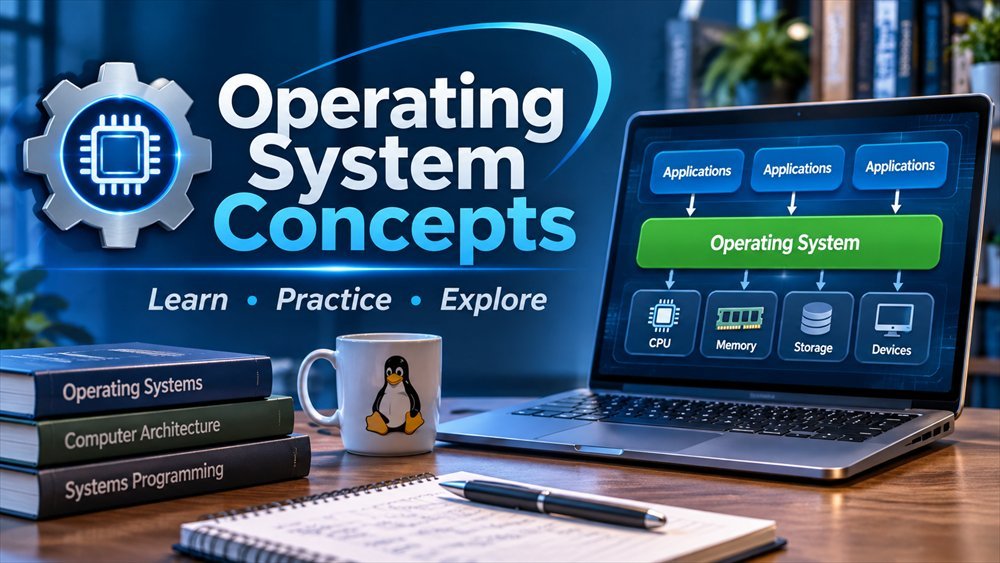

Learn how operating systems really work by changing the numbers yourself. Every module has short explanations, a live simulation you can tweak, and self-check questions with answers shown right away.
Modules
How to use this site
- Play first, then read. Change a slider, edit a table, or press Step and ask “why did that happen?”
- Hover over dotted-underlined terms for a quick definition (they link to the glossary).
- Check yourself: each module ends with questions. Click an answer for instant feedback, or “Show answer”. The study tools add a mixed quiz, flashcards, scenario questions, a timed exam and a private record of your progress.
- Practice the math: Calculation practice gives you a new scheduling, paging, disk or Banker's problem every time, with worked solutions. The Python labs let you try the same ideas on a real computer.
- Use the cheat sheet for formulas and commands, and the FAQ for the questions students ask most often.
This is an independent, open educational project. Simulations are intentionally simplified: real operating systems have many more details, but the core ideas are the same.